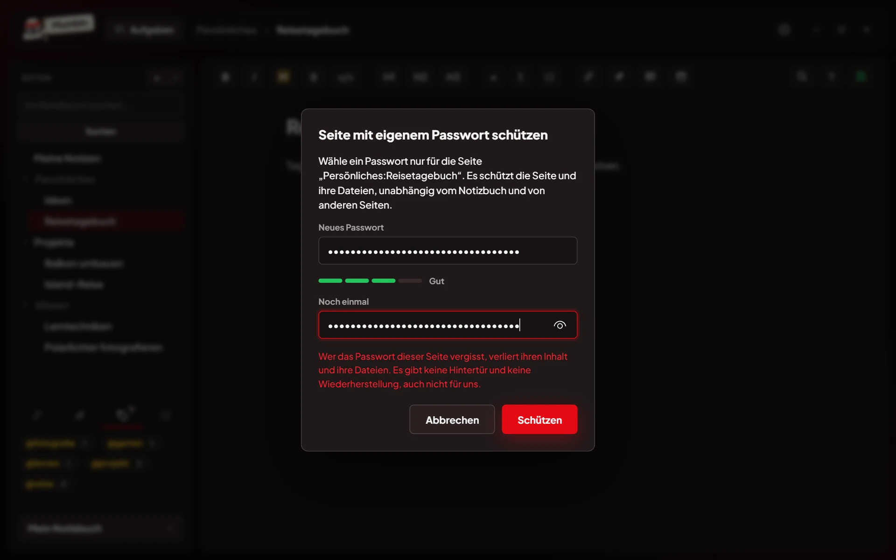

Alle Beiträge / Ratgeber / 5 Min. Lesezeit
Portable Notiz-App: Notizen auf dem USB-Stick und an mehreren PCs nutzen
Eine EXE und ein Ordner: Mehr braucht Mumbin nicht. Das macht deine Notizen beweglich – vom Schreibtisch zum Laptop, vom Büro nach Hause.
Was „portabel“ bedeutet
Eine portable Anwendung läuft ohne Installation direkt aus einem Ordner. Mumbin ist so gebaut: Die Datei mumbin.exe ist rund 4,3 Megabyte groß, die Einstellungen liegen im Ordner mumbin_data daneben. Du kannst beides zusammen auf einen USB-Stick legen und an jedem passenden Windows-PC starten.
Dein Notizbuch ist ein Ordner
Jedes Notizbuch liegt in einem Ordner. Ungeschützte Seiten sind einfache Textdateien, Anhänge liegen in Ordnern daneben. Dadurch lässt sich ein Notizbuch kopieren, sichern und verschieben wie jeder andere Ordner:
So nimmst du alles mit
- Schließe Mumbin oder warte, bis „gespeichert“ angezeigt wird.
- Kopiere den Notizbuchordner und die
mumbin.exesamt Ordnermumbin_dataauf den USB-Stick. - Starte die EXE am anderen PC und öffne den Notizbuchordner.
Die ausführliche Anleitung dazu steht unter „Notizbuch mitnehmen“.
Geschützt unterwegs
Gerade auf einem USB-Stick lohnt sich Verschlüsselung. Verlierst du den Stick, sind Seiten mit Passwort ohne dieses Passwort nicht lesbar, und bei einem versiegelten Notizbuch bleiben sogar die Dateinamen verborgen. Eine Anleitung zu den Schutzarten findest du in der Anleitung „Notizen verschlüsseln“.

Mehrere PCs ohne Konto
Statt eines Cloud-Kontos nutzt du, was du ohnehin hast: einen USB-Stick, eine externe Festplatte oder einen Dateisync-Dienst deiner Wahl. Mumbin verlangt keine Anmeldung und sendet keine Daten ins Internet. Weitere Vorteile lokaler Notizen beschreibt der Artikel Notizen ohne Cloud.
Häufige Fragen
Muss Mumbin installiert werden?
Nein. Mumbin ist eine portable EXE. Du legst sie in einen beschreibbaren Ordner und startest sie. Die Einstellungen liegen im Ordner mumbin_data daneben, nicht in der Registrierung.
Was brauche ich auf dem anderen PC?
Windows 10 oder 11 und die Microsoft Edge WebView2 Runtime, die auf vielen Windows-PCs bereits vorhanden ist.
Kann ich denselben Notizbuchordner auf mehreren PCs synchronisieren?
Ja. Du kannst den Ordner per USB-Stick kopieren oder mit einem Dateisync-Dienst deiner Wahl abgleichen. Öffne ihn dabei immer nur auf einem Rechner gleichzeitig.